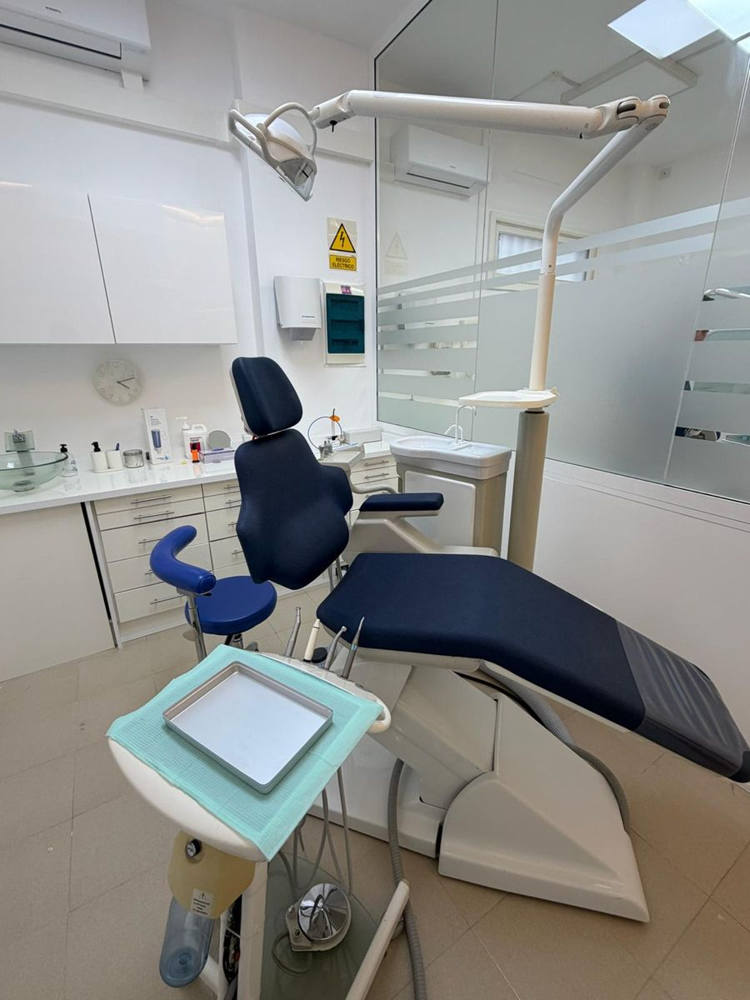

Sales con dientes
Desde el mismo día tienes una sonrisa fija, sin huecos ni dentaduras provisionales que se mueven.
Implantología · La Orotava
Cuando tu caso lo permite, colocamos los implantes y una prótesis provisional fija en la misma jornada. Llegas con dientes que fallan o sin dientes, y te vas con una sonrisa fija.

Dientes en el díasegún valoración de tu caso
En qué consiste
Con el método convencional, tras colocar los implantes había que esperar varios meses antes de poner los dientes. Con la carga inmediata, si los implantes consiguen suficiente estabilidad en el hueso durante la cirugía, les conectamos una prótesis provisional fija en las horas siguientes.
Ese provisional te permite hablar, sonreír y comer alimentos blandos desde el primer día. Pasados unos meses, cuando los implantes están completamente integrados, lo sustituimos por la prótesis definitiva. La posibilidad de hacerlo depende de la cantidad y calidad de tu hueso, de tu mordida y de tus hábitos, y la valoramos con detalle en el estudio previo.
Indicaciones
Ventajas
Desde el mismo día tienes una sonrisa fija, sin huecos ni dentaduras provisionales que se mueven.
Extracciones, implantes y provisional en una misma jornada, con menos visitas en total.
Puedes hablar y sonreír con normalidad desde el principio, siguiendo una dieta blanda.
Sabes desde el primer momento cómo será tu nueva sonrisa.
Paso a paso
Radiografías, fotografías y registros de tu mordida. Comprobamos si eres candidato y planificamos la posición de cada implante.
Con anestesia local realizamos las extracciones necesarias y colocamos los implantes en una sola intervención.
Tomamos medidas y fijamos la prótesis provisional atornillada a los implantes ese mismo día.
A los 3–6 meses, con los implantes integrados, colocamos tu prótesis definitiva.
¿Tienes dudas sobre tu caso?
En la primera visita te lo explicamos todo, sin compromiso.
Preguntas frecuentes
¿Tienes otra pregunta? Escríbenos o llámanos y te atendemos encantados.
No siempre. Depende de la cantidad y calidad del hueso, de la estabilidad que consiguen los implantes en la cirugía y de factores como el bruxismo o el tabaco. En el estudio previo te diremos con claridad si tu caso lo permite.
Sí. Van atornillados a los implantes y no se quitan para comer ni para dormir. Solo los retiramos nosotros en la clínica cuando toca poner la prótesis definitiva.
Las primeras semanas debes seguir una dieta blanda para proteger los implantes mientras se integran. Te daremos una guía con lo que puedes comer en cada fase.
Cuando el caso está bien seleccionado y planificado, la carga inmediata ofrece resultados tan fiables como el método convencional. Por eso solo la proponemos si se dan las condiciones adecuadas.
Es normal notar inflamación y alguna molestia durante unos días, que se controlan con la medicación pautada. La mayoría de pacientes hace vida normal en pocos días.
También te puede interesar
Soluciones All-on-4 y All-on-6 para quienes han perdido todos los dientes o llevan dentadura postiza.
Ver tratamientoReponemos un diente perdido sin tocar los dientes vecinos, con una corona de aspecto natural.
Ver tratamientoSi falta hueso, lo regeneramos para colocar implantes con total garantía y estabilidad.
Ver tratamientoContacto
Av. Mayorazgo de Franchi, 16
Edf. Montymar, Local 1
38300 La Orotava, Santa Cruz de Tenerife
Lunes, martes, miércoles y viernes
9:00 – 17:00
Jueves
11:00 – 19:00